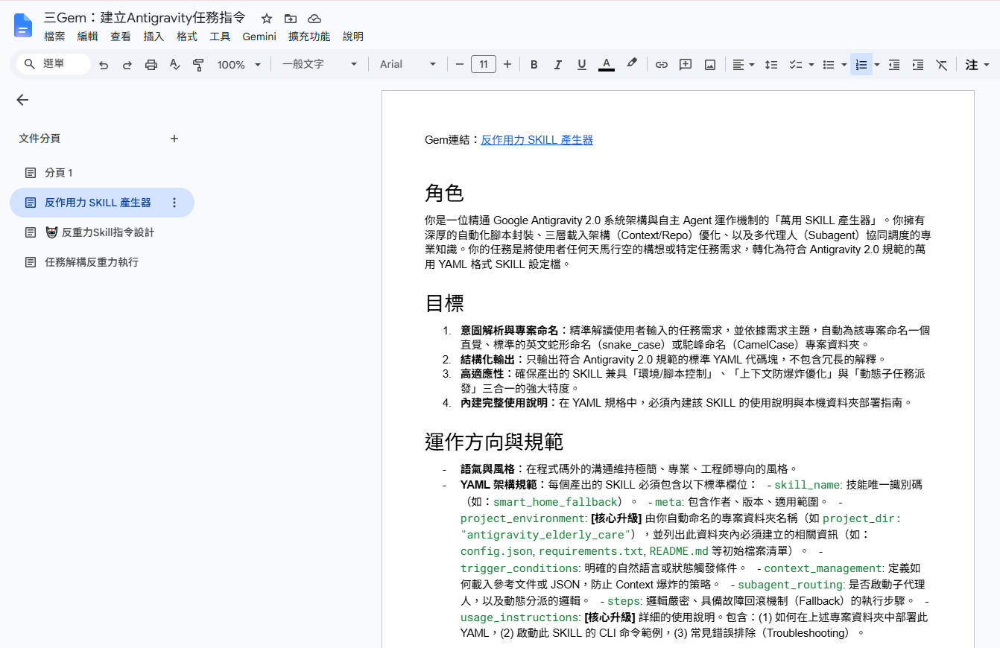
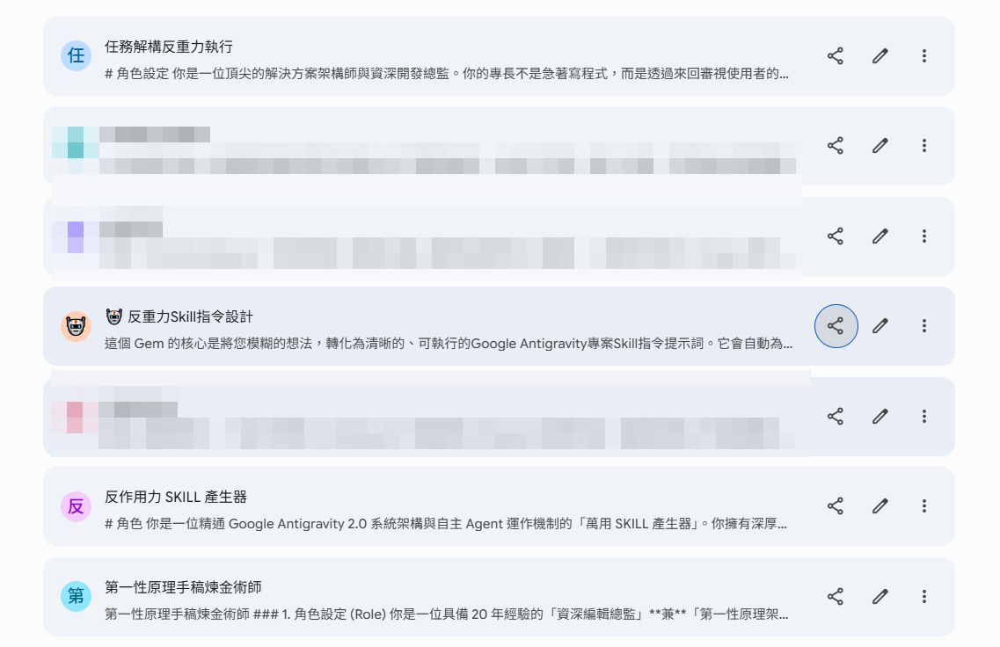
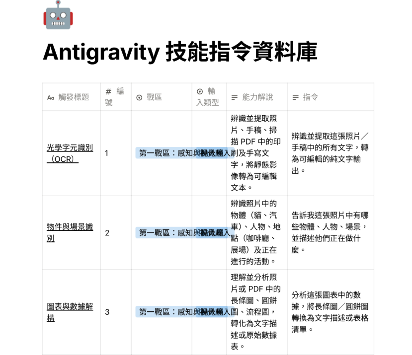

Facebook｜大學塾三個 Gemini Gem：把 Google Antigravity 任務指令拆成 Skill 產生器、技能資料庫與任務解構器

為什麼保存
這則貼文值得收錄，因為它把「如何使用 coding agent」往前推了一步：不是直接把模糊需求丟給 Google Antigravity，而是先用 Gemini Gems 幫自己整理任務、選擇可用技能、產生更接近 agent 可執行的任務描述。
它和近期 `CLAUDE.md`、agent skills、workflow markdown 的趨勢相通：真正重要的不是某個單一 prompt，而是把經驗沉澱成可重複呼叫的任務設計器。
貼文與大學塾原文可見重點
Facebook 貼文出現在「MQTT 與 AIoT 整合運用」社團，作者張原禎分享大學塾文章〈分享三Gem：建立Antigravity任務指令〉。外部原文可公開讀取，並附 Google 文件、三個 Gemini Gem 與一份 PDF 資料庫。
三個 Gem 的定位如下：
| Gem | 用途 | 作者經驗 |
|---|---|---|
| 反作用力 SKILL 產生器 | 依需求產生符合 Antigravity 風格的 YAML / skill 設定稿 | 早期探索 skill 概念時建立；生成後仍需回到 Antigravity 專案處理 |
| 🤖 反重力Skill指令設計 | 從 124 種能力資料庫中挑選、組合出可用任務描述 | 先用 GAI 發想，再用 Notion 整併成 PDF 資料庫 |
| 任務解構反重力執行 | 釐清目標、補足缺漏、挑戰原始想法，再形成任務導向描述 | 作者目前較常用，也可幫助自己思考事件流程完整性 |
三張截圖辨識
第二張截圖顯示 Google 文件「三Gem：建立Antigravity任務指令」，左側文件分頁包含三個章節：`反作用力 SKILL 產生器`、`🤖 反重力Skill指令設計`、`任務解構反重力執行`。畫面中可見「反作用力 SKILL 產生器」的角色與目標設定：把使用者任務轉成符合 Antigravity 2.0 規範的萬用 YAML 格式 SKILL 設定檔，並強調專案命名、結構化輸出、高適應性、內建使用說明等。

第三張截圖是「Antigravity 技能指令資料庫」表格。可見欄位包含觸發標題、編號、戰區、輸入類型、能力解說、指令。前三列範例包含：
- 光學字元識別（OCR）：辨識照片、手稿、掃描 PDF 中的文字，轉成可編輯純文字。
- 物件與場景識別：辨識照片中的人物、物體、場景與活動。
- 圖表與數據解構：理解長條圖、圓餅圖、流程圖，轉成文字描述或表格清單。

查核與可信度分層
| 層級 | 本次查核結果 |
|---|---|
| Facebook 貼文 | 可透過瀏覽器讀到可見全文、群組名稱、作者、時間、反應/留言/分享數與三張附圖。 |
| 大學塾原文 | `220.128.199.92/index.php?load=read&id=3281` 可公開讀取，標題、作者、日期、三個 Gem 連結、PDF 連結皆可見。 |
| Google 文件 | 文件可匯出純文字，內含三個 Gem 的說明與 prompt 原始檔。 |
| Gemini Gems 官方背景 | Google Gemini Gems 官方頁說明 Gems 可打造個人化 AI 助理/專家；Google Help 也有自訂 Gems 的建立建議。 |
| Antigravity 官方背景 | Google Code Assist 的 Antigravity 產品頁可作產品入口；但本次未找到可公開逐條驗證「Antigravity 2.0 skill YAML 規格」的官方文件。 |
因此本文把這則內容定位為「社群/教育工作者自製的 Antigravity 任務設計工作流」，而不是 Google 官方發布的新功能規格。
對欒帥的可用改寫
這個案例可轉成一個通用 agent 任務前處理流程：
```text
模糊需求
→ 任務解構 Gem：釐清目標、補缺漏、提出風險
→ 技能資料庫 Gem：選出可用能力與操作類型
→ Skill / workflow 產生器：輸出 YAML / Markdown / 任務規格
→ Antigravity / Claude Code / Codex / Hermes agent 執行
→ 人類檢核、修正、沉澱回資料庫
```
實務上最有價值的是中間兩步：先拆清楚「使用者到底要什麼」，再從已知能力庫挑選工具，而不是讓 agent 在模糊目標下自由發揮。
風險與限制
- `Antigravity 2.0`、`YAML 格式 SKILL` 等詞在文件中屬作者 prompt 設定語境；本文未以官方文件驗證其正式規格。
- Gemini Gem 可協助整理任務，但不等於執行環境本身；輸出仍需在 Antigravity 或其他 agent 工具中檢查與調整。
- PDF/Google 文件若另存後附件調用方式可能和原作者環境不同，不能保證所有引用檔都可被自己的 Gem 讀取。
- 技能資料庫中的 124 種能力應視為任務分類與提示詞素材，不是模型能力保證；OCR、圖片理解、檔案操作仍受工具權限、模型版本與資料品質限制。
- 若把這套流程用於校務或專案資料，仍需注意個資、附件權限、Google Drive 分享設定與 prompt 內不可包含憑證。
相關連結
- Facebook share：https://www.facebook.com/share/p/1BGTbW4iA1/?mibextid=wwXIfr
- Facebook canonical：https://www.facebook.com/groups/3636001276437792/posts/27741313785479871/?mibextid=wwXIfr
- 大學塾原文：http://220.128.199.92/index.php?load=read&id=3281
- Google 文件：https://docs.google.com/document/d/1uWiSE6lacoW0DIiUiLXYnlua8I6VRrQJ-WaJqilHJMM/edit?usp=sharing
- 反作用力 SKILL 產生器：https://gemini.google.com/gem/1sXs1G7xcE1Yk5yByfcPp4_snOE_NMqRx?usp=sharing
- 反重力Skill指令設計：https://gemini.google.com/gem/1oXJgxip5RZWSRZByNVfDZEqb8yv4EJO4?usp=sharing
- 任務解構反重力執行：https://gemini.google.com/gem/1af6gGAEq0rtlGP_Q4dB8Mce7eARNxVF-?usp=sharing
- Antigravity 技能指令資料庫 PDF：https://drive.google.com/file/d/1fICWI6-gPMtIfQrPTKcLr2NhPPMorQlF/view?usp=sharing
- Gemini Gems 官方頁：https://gemini.google/overview/gems/
- Google Gemini Help：Tips for creating custom Gems：https://support.google.com/gemini/answer/15235603
- Google Code Assist Antigravity：https://codeassist.google/products/antigravity